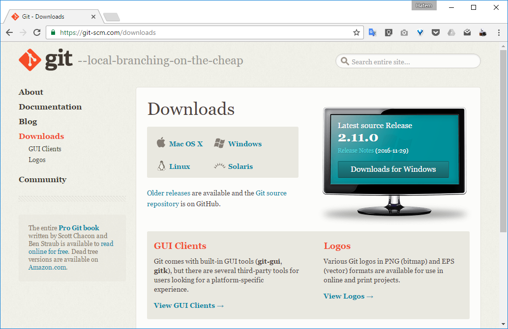

Introduction to Git
Hatem Mahmoud
Outline
- Introduction
- Git Basics
- Branching and Merging
- Updating and Sharing
- Using GitHub
- Git Tools
- Resources
Introduction
Version Control
A system that records changes to a file or set of files over time so that you can recall specific versions later.
Version Control
It allows you to revert files back to a previous state, revert the entire project back to a previous state, compare changes over time, see who last modified something that might be causing a problem, who introduced an issue and when, and more.
Local Version Control

Centralized Version Control
Distributed Version Control

Git History
- Between 1991 and 2002, changes to the Linux kernel project were passed around as patches and archived files.
- In 2002, it began using BitKeeper, a proprietary distributed version control system.
- In 2005, Linus Torvalds designed his own system, Git, influenced by BitKeeper.
Other Systems Store Differences

Git Stores Snapshots

Most Operations are Local
- Project's entire history is on your local disk.
- No network latency overhead.
- Work offline until you get to a network connection to upload.
Three States
Installing Git
Git Setup
# Sets the default name for git to use when you commit
$ git config --global user.name "Hatem Mahmoud"
# Sets the default email for git to use when you commit
$ git config --global user.email "hatem@expressionlab.com"
Getting Help
$ git help
Git Basics
Initializing a Repository
# Create a directory for your project
$ mkdir ~/my-project
$ cd ~/my-project
# Setup necessary files
$ git init
Cloning an Existing Repository
$ git clone https://github.com/HatemMahmoud/my-project.git
Cloning into 'my-project'...
remote: Counting objects: 3, done.
remote: Total 3 (delta 0), reused 0 (delta 0)
Unpacking objects: 100% (3/3), done.
File Status Lifecycle
Check Status
$ git status
# On branch master
#
# Initial commit
#
nothing to commit (create/copy files and use "git add" to track)
Creat a File
$ touch README
$ git status
# On branch master
#
# Initial commit
#
# Untracked files:
# (use "git add ..." to include in what will be committed)
#
# README
nothing added to commit but untracked files present (use "git add" to track)
Add Changes to the Staging Area
$ git add README
$ git status
# On branch master
#
# Initial commit
#
# Changes to be committed:
# (use "git rm --cached ..." to unstage)
#
# new file: README
#
Commit Staged Files
$ git commit -m 'My first commit'
[master (root-commit) d3b1065] My first commit
1 file changed, 1 insertion(+)
create mode 100644 README
$ git status
# On branch master
nothing to commit (working directory clean)
Modify a Committed File
$ nano README
$ git status
# On branch master
# Changes not staged for commit:
# (use "git add ..." to update what will be committed)
# (use "git checkout -- ..." to discard changes in working directory)
#
# modified: README
#
no changes added to commit (use "git add" and/or "git commit -a")
Unmodify a Modified File
$ git checkout README
$ git status
# On branch master
nothing to commit (working directory clean)
View Changes
$ nano README
$ git diff
diff --git a/README b/README
index 56266d3..9cbeb31 100644
--- a/README
+++ b/README
@@ -1 +1 @@
-My Project
+My Project Updated
Ignore Some Files
# .gitignore
/log/*
/tmp/*
.DS_Store
Stage Changes
$ git add README
$ git status
# On branch master
# Changes to be committed:
# (use "git reset HEAD ..." to unstage)
#
# modified: README
#
Unstage a Staged File
$ git reset HEAD README
Unstaged changes after reset:
M README
$ git status
# On branch master
# Changes not staged for commit:
# (use "git add ..." to update what will be committed)
# (use "git checkout -- ..." to discard changes in working directory)
#
# modified: README
#
no changes added to commit (use "git add" and/or "git commit -a")
Commit Changes
$ git add .
$ git commit -m 'Updated README'
[master 1302816] Updated README
1 file changed, 1 insertion(+), 1 deletion(-)
$ git status
# On branch master
nothing to commit (working directory clean)
View Commit History
$ git log
commit 1302816b21570a5ad712ee166e16e16dc12d011b
Author: Hatem Mahmoud
Date: Wed Nov 7 00:19:54 2012 +0200
Updated README
commit d3b1065899c14c192ad9af0227615f4d665d4195
Author: Hatem Mahmoud
Date: Tue Nov 6 23:59:26 2012 +0200
My first commit
Branching and Merging
Master Branch

Create a Branch
$ git branch iss53
$ git checkout iss53
Switched to a new branch "iss53"

Commit to Branch
# Update some files
$ git commit -a -m 'Changes for issue #53'

Create Another Branch
$ git checkout master
Switched to branch "master"
$ git checkout -b 'hotfix'
Switched to a new branch "hotfix"
# Update some files
$ git commit -a -m 'Fixed broken feature'
[hotfix]: created 3a0874c: "Fixed broken feature"
1 files changed, 0 insertions(+), 1 deletions(-)

Fast-forward Merge
$ git checkout master
$ git merge hotfix
Updating f42c576..3a0874c
Fast forward
README | 1 -
1 files changed, 0 insertions(+), 1 deletions(-)

Switch Back to Branch
$ git branch -d hotfix
Deleted branch hotfix (3a0874c).
$ git checkout iss53
Switched to branch "iss53"
# Update some files
$ git commit -a -m 'Finished changes for issue #53'
[iss53]: created ad82d7a: "Finished changes for issue #53"
1 files changed, 1 insertions(+), 0 deletions(-)

Three-way Merge
$ git checkout master
$ git merge iss53
Merge made by recursive.
README | 1 +
1 files changed, 1 insertions(+), 0 deletions(-)

Merge Commit

Merge Conflict
$ git merge iss53
Auto-merging index.html
CONFLICT (content): Merge conflict in index.html
Automatic merge failed; fix conflicts and then commit the result.
$ git status
index.html: needs merge
# On branch master
# Changed but not updated:
# (use "git add ..." to update what will be committed)
# (use "git checkout -- ..." to discard changes in working directory)
#
# unmerged: index.html
#
Conflict-resolution Markers
<<<<<<< HEAD:index.html
Some content here.
=======
Another content here.
>>>>>>> iss53:index.html
Resolve Conflicts
# Update some files
$ git add .
$ git commit
Merge branch 'iss53'
Conflicts:
index.html
#
# It looks like you may be committing a MERGE.
# If this is not correct, please remove the file
# .git/MERGE_HEAD
# and try again.
#
Updating and Sharing
Get Updates
# Fetch updates
$ git fetch origin
# Fetch updates and merge them
$ git pull
Push Commits
# Create a remote named "origin" pointing at your repo
$ git remote add origin https://github.com/HatemMahmoud/my-project.git
# Upload your commits in the "master" branch to the repo
$ git push origin master
Using GitHub


Git Tools


Resources


Thank You!
Hatem Mahmoud